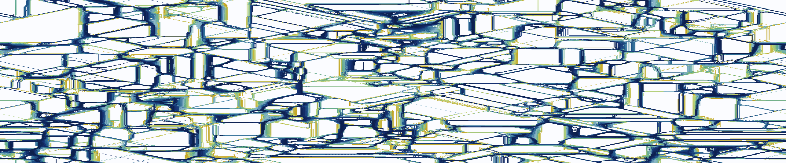

All papers and preprints

Incident COVID-19 Infections Before Omicron in the US
Lobay, R, Srivastava, A, Tibshirani, RJ, McDonald, DJEpidemics, XX, 100838, 2025
Challenges in Estimating Time-Varying Epidemic Severity Rates from Aggregate Data
Goldwasser, J, Hu, AJ, Bilinski, A, McDonald, DJ, et al.Technical Report, 2024
Associative White Matter Tracts Selectively Predict Sensorimotor Learning
Vinci-Booher, S, McDonald, DJ, Berquist, E, Pestilli, FCommunications Biology, 7, 762, 2024
Evaluation of FluSight Influenza Forecasting in the 2021-22 and 2022-23 Seasons with a New Target Laboratory-Confirmed Influenza Hospitalizations
Mathis, SM, Webber, AE, León, TM, Murray, EL, et al.Nature Communications, 15, 6289, 2024
Rtestim: Time-Varying Reproduction Number Estimation with Trend Filtering
Liu, J, Cai, Z, Gustafson, P, McDonald, DJPLOS Computational Biology, 20, e1012324, 2024
Sparsegl: An R Package for Estimating Sparse Group Lasso
Liang, X, Cohen, A, Heinsfeld, AS, Pestilli, F, et al.Journal of Statistical Software, 110, 1–23, 2024
Exponential Family Trend Filtering on Lattices
Sadhanala, V, Bassett, R, Sharpnack, J, McDonald, DJElectronic Journal of Statistics, 18, 1749–1814, 2024
Smooth Multi-Period Forecasting with Application to Prediction of COVID-19 Cases
Tuzhilina, E, Hastie, TJ, McDonald, DJ, Tay, JK, et al.Journal of Computational and Graphical Statistics, 33, 955-967, 2023
Less is More: Balancing Noise Reduction and Data Retention in fMRI with Projection Scrubbing
Pham, D, Ding, L, McDonald, DJ, Nebel, MB, et al.Neuroimage, 270, 119972, 2023
Empirical Macroeconomics and DSGE Modeling in Statistical Perspective
McDonald, DJ, Shalizi, CRTechnical Report, 2022
The United States COVID-19 Forecast Hub Dataset
Cramer, EY, Huang, Y, Wang, Y, Ray, EL, et al.Scientific Data, 9, 462, 2022
Evaluation of Individual and Ensemble Probabilistic Forecasts of COVID-19 Mortality in the United States
Cramer, EY, Ray, EL, Lopez, VK, Bracher, J, et al.Proceedings of the National Academy of Sciences, 119, e2113561119, 2022
An Open Repository of Real-Time COVID-19 Indicators
Reinhart, A, Brooks, L, Jahja, M, Rumack, A, et al.Proceedings of the National Academy of Sciences, 118, e2111452118, 2021
Can Auxiliary Indicators Improve COVID-19 Forecasting and Hotspot Prediction?
McDonald, DJ, Bien, J, Green, A, Hu, AJ, et al.Proceedings of the National Academy of Sciences, 118, e2111453118, 2021
Flexible Analysis of TSS Mapping Data and Detection of TSS Shifts with TSRexploreR
Policastro, RA, McDonald, DJ, Brendel, VP, Zentner, GENAR Genomics and Bioinformatics, , 1–10, 2021
Markov-Switching State Space Models for Uncovering Musical Interpretation
McDonald, DJ, McBride, M, Gu, Y, Raphael, CAnnals of Applied Statistics, 15, 1147–1170, 2021
Compressed and Penalized Linear Regression
Homrighausen, D, McDonald, DJJournal of Computational and Graphical Statistics, 29, 309–322, 2020
Book Review: Sufficient Dimension Reduction: Methods and Applications with R
McDonald, DJJournal of the American Statistical Association, 115, NA, 2020
Algorithms for Estimating Trends in Global Temperature Volatility
Khodadadi, A, McDonald, DJProceedings of the 33rd AAAI Conference on Artificial Intelligence (AAAI-19), 2019
A Study on Tuning Parameter Selection for the High-Dimensional Lasso
Homrighausen, D, McDonald, DJJournal of Statistical Computation and Simulation, 88, 2865–2892, 2018
Rademacher Complexity of Stationary Sequences
McDonald, DJ, Shalizi, CRTechnical Report, 2017
Minimax Density Estimation for Growing Dimension
McDonald, DJProceedings of the Twentieth International Conference on Artificial Intelligence and Statistics (AISTATS), 54, 194–203, 2017
Predicting Phenotypes from Microarrays using Amplified, Initially Marginal, Eigenvector Regression
Ding, L, McDonald, DJBioinformatics, 33, i350–i358, 2017
Risk Consistency of Cross-Validation for Lasso-Type Procedures
Homrighausen, D, McDonald, DJStatistica Sinica, 27, 1017–1036, 2017
Nonparametric Risk Bounds for Time-Series Forecasting
McDonald, DJ, Shalizi, CR, Schervish, MJournal of Machine Learning Research, 18, 1–40, 2017
On the Nystrom and Column-Sampling Methods for the Approximate Principal Components Analysis of Large Data Sets
Homrighausen, D, McDonald, DJJournal of Computational and Graphical Statistics, 25, 344–362, 2016
Does Increased Sexual Frequency Enhance Happiness?
Loewenstein, G, Krishnamurti, T, Kopsic, J, McDonald, DJJournal of Economic Behavior and Organization, 116, 206–218, 2015
Estimating Beta-Mixing Coefficients via Histograms
McDonald, DJ, Shalizi, CR, Schervish, MElectronic Journal of Statistics, 9, 2855–2883, 2015
Leave-One-Out Cross-Validation is Risk Consistent for Lasso
Homrighausen, D, McDonald, DJMachine Learning, 97, 65–78, 2014
The Lasso, Persistence, and Cross-Validation
Homrighausen, D, McDonald, DJProceedings of the Thirtieth International Conference on Machine Learning (ICML), 28, 1031–1039, 2013
Generalization Error Bounds for State-Space Models
McDonald, DJPh.D. Dissertation, 2012
The Impact of Price Discounts and Calorie Messaging on Beverage Consumption: A Multi-Site Field Study
Jue, JJ, Press, MJ, McDonald, DJ, Volpp, KG, et al.Preventive Medicine, 55, 629–633, 2012
Spectral Approximations in Machine Learning
Homrighausen, D, McDonald, DJTechnical Report, 2011
Estimated VC Dimension for Risk Bounds
McDonald, DJ, Shalizi, CR, Schervish, MTechnical Report, 2011
Generalization Error Bounds for Stationary Autoregressive Models
McDonald, DJ, Shalizi, CR, Schervish, MTechnical Report, 2011
Estimating Beta-Mixing Coefficients
McDonald, DJ, Shalizi, CR, Schervish, MProceedings of the Fourteenth International Conference on Artificial Intelligence and Statistics (AISTATS), 15, 516–524, 2011
The Behavior of Weight-Loss Study Participants in Response to Incentives
McDonald, DJ, Loewenstein, GF, Kadane, JTechnical Report, 2009
Sufficient Principal Component Regression for Genomics
Ding, L, Zentner, GE, McDonald, DJBioinformatics Advances, , vbac033,